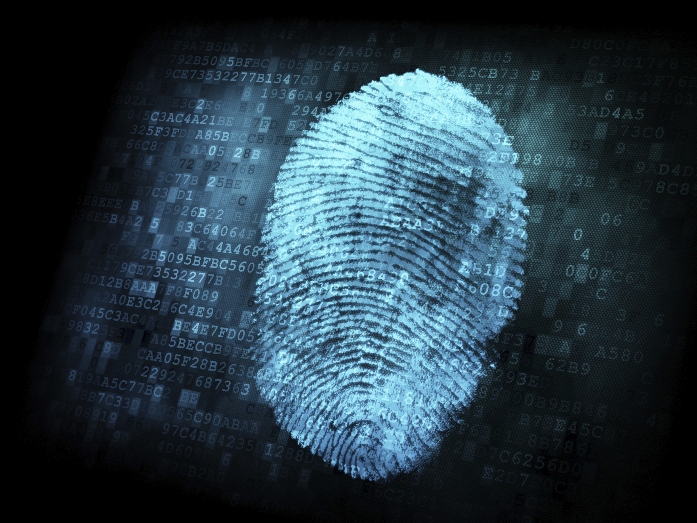
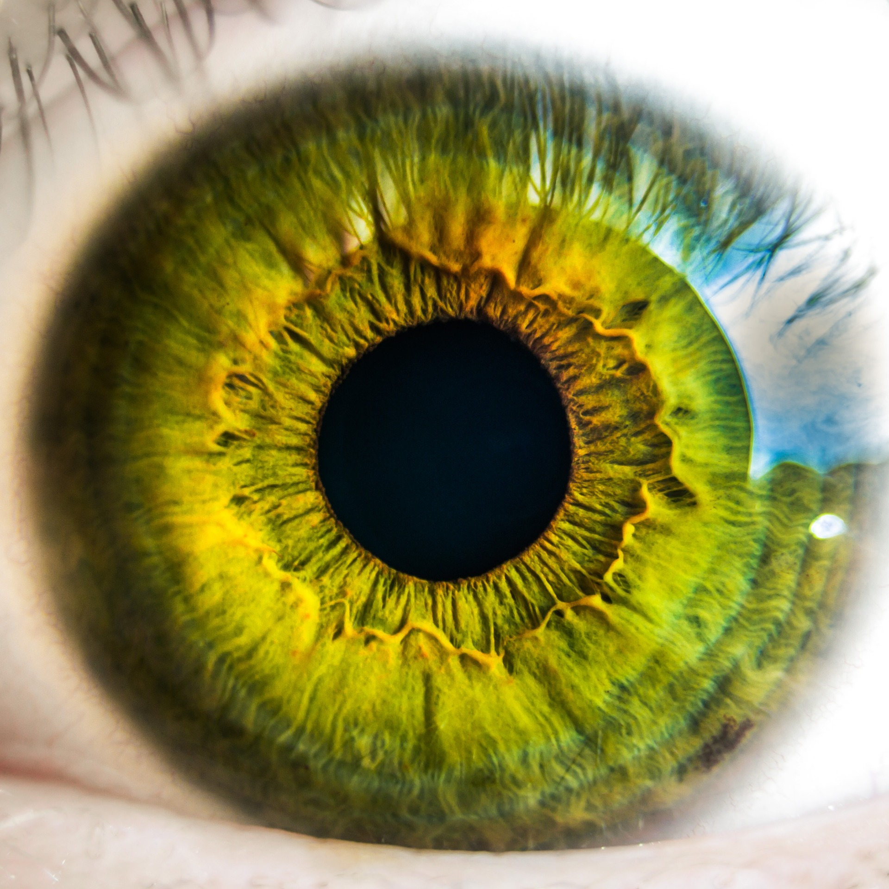
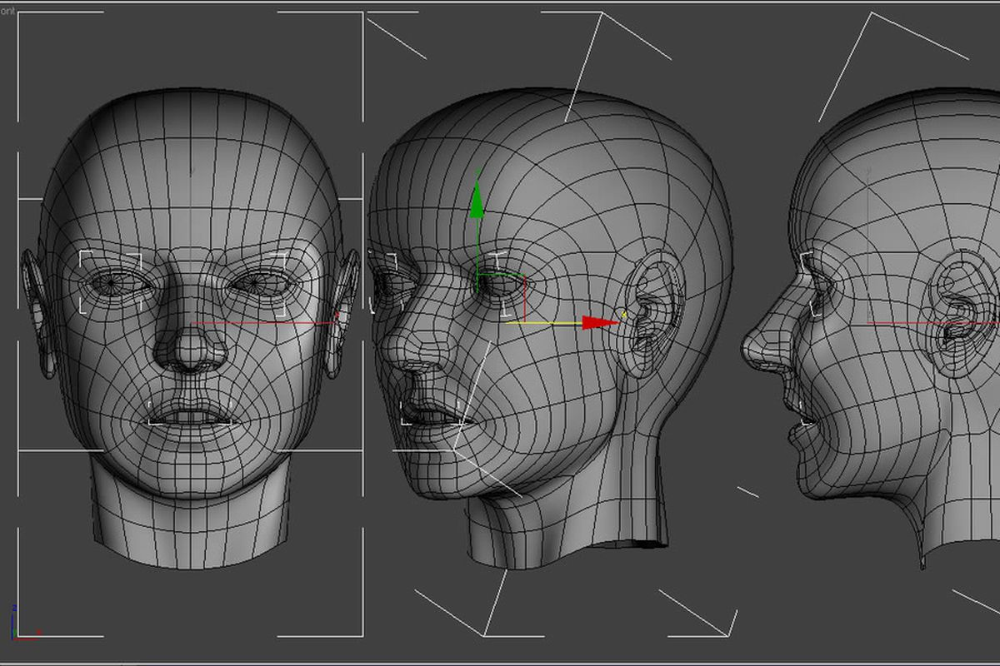
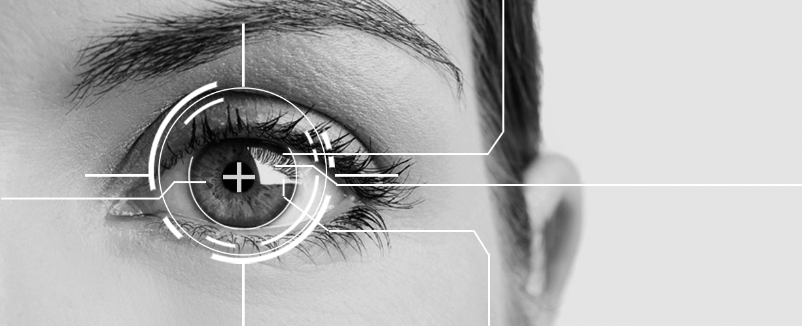

What is a biometric device?
A biometric device identifies a person using their biological features to gain access to a particular thing. Methods of determining a person’s features can through the use of scanning a person’s hand, face, iris, retina, fingerprints, or voice. This system is much more difficult to manipulate when compared to passwords as a biometric identification is unique to each person.

Why is it important?
With the ever-increasing technological advancements, organisations need to be adaptive, flexible and agile to be able to keep up with security issues. Such organisations include health care, governments, retail enterprises, libraries, universities, and manufacturing industries. What do these organisations have in common?. People. Employee identification becomes much easier to manage when biometric devices are used. It is faster, more efficient and accurate to scan a fingerprint than to have each employee type in their password for identification.
Types of biometric devices

Fingerprint identification: As the name suggests, this method of identification scans a person’s fingerprint and generates an image of the ridges and valleys based on the fingerprint. A sophisticated pattern-matching software takes the scan and turns it into a unique code.

Retina scan: A retina scan scans the blood vessels located in the back of the eye. Just like fingerprints, the pattern of the vessels remains the same throughout a person's life. A low-energy infrared light is beamed into the person’s eyes as they look through the eyepiece scanner to trace a path on the retina. Specialised software takes the network of blood vessels and converts it into a template. This template is then matched with the one in the database for approval.

Facial recognition: This type of method identifies an individual by comparing a live capture with the stored record for that person. The system identifies an individual's face through nodal points. These points measure the variables of the face such as the width and length of the nose, depth of the eye sockets, and shape of the cheekbones. This creates a faceprint which is a digital image of the individual’s face to match the live capture.

Iris recognition: The advantage of using iris scanning is its accuracy and reliability. It is estimated that iris scanning is ten times more accurate than fingerprinting. The scan provides an analysis of the rings, furrows and freckles of the iris and produces a digital image. An image processing software attempts to isolate specific parts of the image to match the stored code in a database.
Conclusion
Biometric devices are on the rise to compete against fraud identity and security breaches, as well as to secure confidential data, reduce costs and improve overall security. The adoption of biometric devices by large organisations will continue to grow further and influence smaller business to also make the change.
.gif)